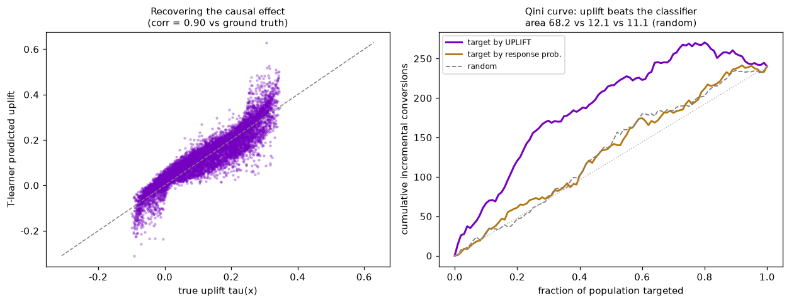
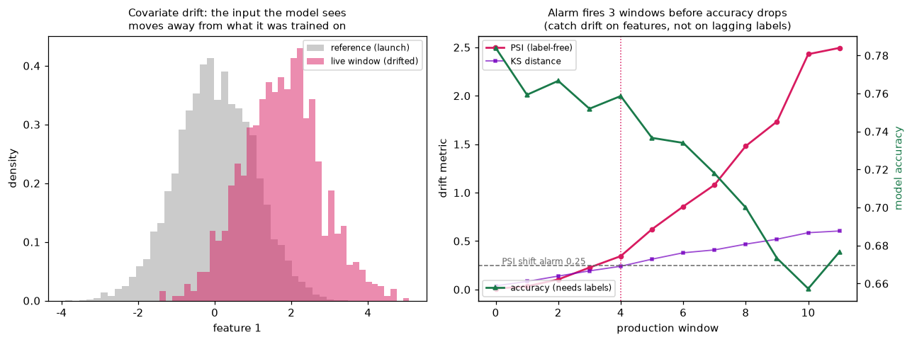

AIアーキテクトの仕事は、モデルの精度を上げることではなくビジネスの意思決定を変えるAIを設計し、本番で生かし続けること。ここでは①因果アップリフト（誰に施策を打つかを"転換確率"ではなく"因果効果"で決める）②本番MLのドリフト監視（ラベルを待たずに劣化を検知する）——コンサル×実装の両輪を、ランダム化試験とストリーム統計から実装し、閉ループで検証する。既存の半導体AI（自己教師あり異常検知・少ラベル能動学習）と合わせて"設計して運用まで持っていく"AIの実例。
分類器は「転換しそうな人」を上位に並べる。だが予算を活かす問いは別で、より難しい：「施策のおかげで転換する人は誰か」＝個別因果効果（アップリフト）。両者は同じ人を指さない——放っておいても転換する"勝ち確"や、何をしても動かない"負け確"に予算を溶かすのが失敗の典型。ランダム化試験（傾向0.5）からT-learner（処置群・対照群に別々の応答モデル、IRLS自作）でアップリフトを推定し、真の因果効果と相関0.90で回収（held-out評価）。Qini曲線で「アップリフト順」を「転換確率順」「ランダム」と比較——面積で狙い撃ちの価値が定量化される。閉ループ：A/A試験（効果ゼロ）ではQini面積が≈0に潰れる。

AIアーキテクトの仕事はデプロイで終わらない。本番では入力分布が動き（季節性・新セグメント・上流変更）、精度が静かに腐る。それを証明できる唯一のもの＝ラベルは遅れて届くか、来ない。だからドリフトは特徴量だけから、教師なしで捕まえる必要がある。PSI（Population Stability Index）を基準分位ビンで実装（Σ(p_live−p_ref)ln(p_live/p_ref)、閾値0.1/0.25）＋KS距離。曲線境界の非線形ラベルに線形モデルをデプロイし、共変量ドリフトで精度が確実に劣化する系で、ラベル不要のPSI警報が精度低下より3窓早く鳴る——腐りかけのラベルを待たず、特徴量の兆候で介入する、という設計思想を数字で示す。閉ループ：同一分布でPSI=0.001、シフト量に対し単調増加。

関連（実装済み）：半導体スマートAI（自己教師あり異常検知・少ラベル能動学習）・信頼できるAI（公平性・説明性）。出所：accenture/{uplift_modeling, drift_monitoring}.py。